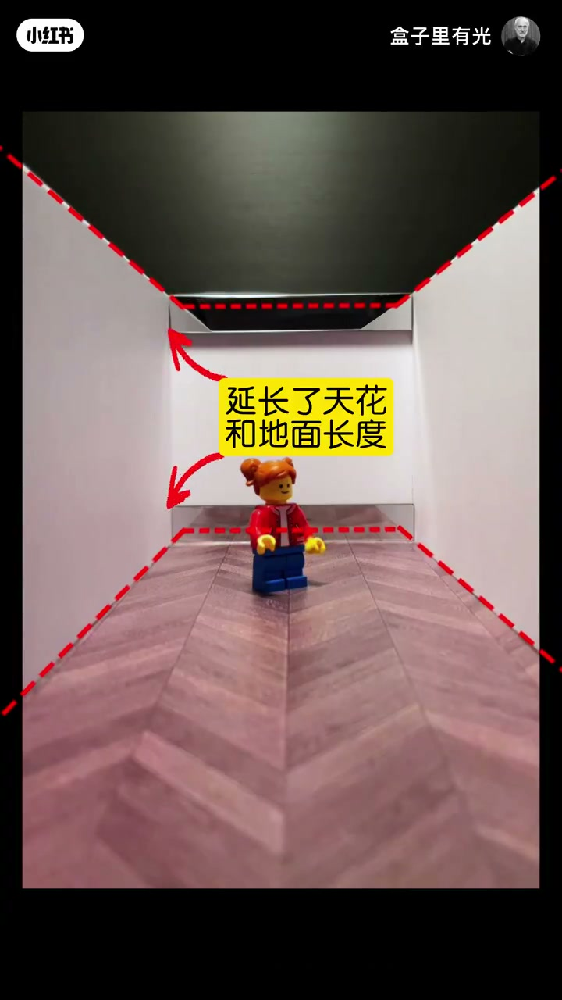
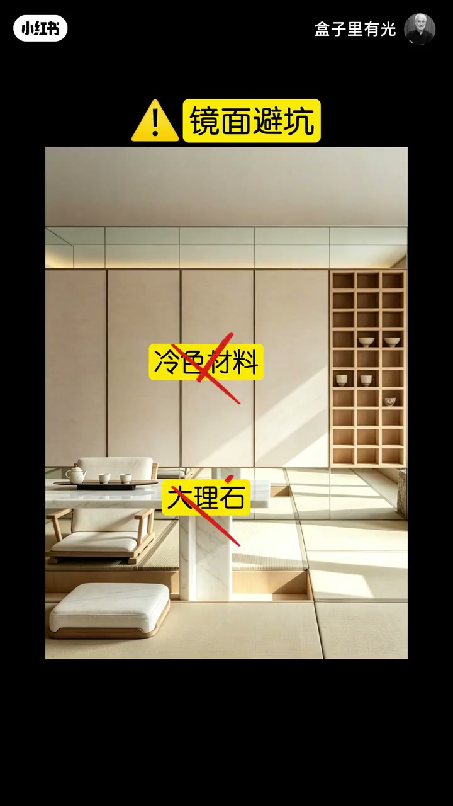
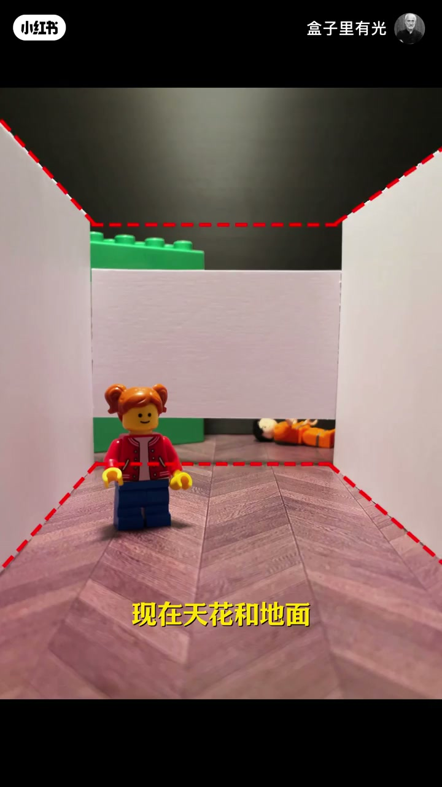
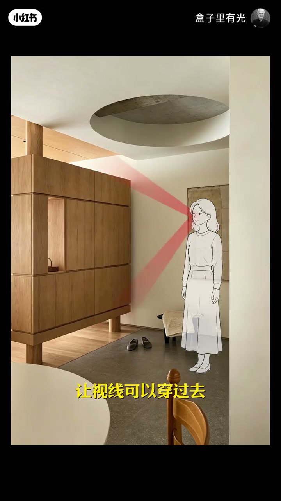
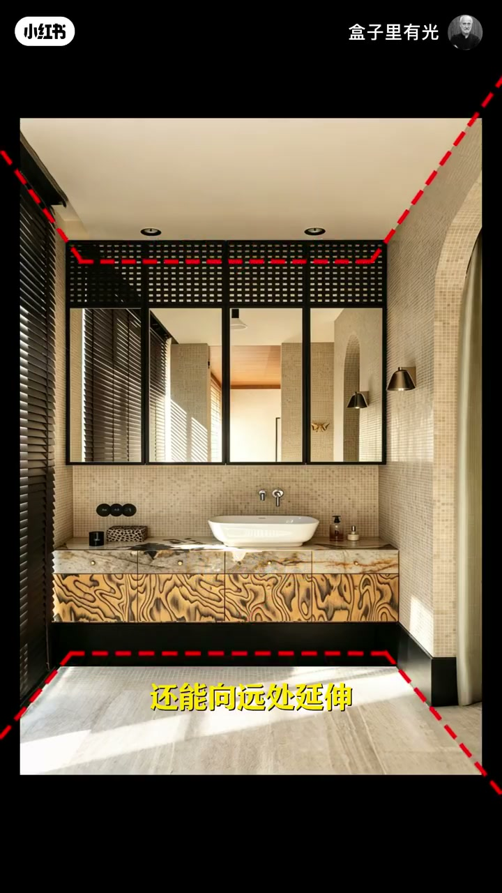

内容要点
盒子里有光继续用模型与实景讲「把家看大」：先用墙面上下镜条延长天花与地面，再开缝、悬浮弱化边界，最后用深色边框模糊封闭感。三条路径都配材料/结构纪律——有镜勿配冷石、悬浮至少一侧靠墙、深色边框旁勿再叠深色家具。
知识结构
墙面上下加镜延长天花与地面，降低拥堵；有镜后改温润木头，勿配冰冷大理石。
拥堵墙上下开缝让天花地面外延；玄关鞋柜上下留空造悬浮透视线。避坑：勿四面悬空，至少一侧靠墙。
白墙封闭时加深色边框模糊边界；卫生间同理。有深色边框就勿再配深色家具，桌改浅色保层次。
「变大」在这里是弱化边界，不是加面积：镜条延长可指认的天花/地面线；开缝与悬浮让视线穿过；深色边框模糊白墙封闭感。每条都有反例——冷材+镜、四面悬空、深框+深家具。
00:00-00:31上下镜条延长天花与地面；有镜改温润材
开场指着拥堵墙面：在上面和下面加两条镜子，镜子延长天花和地面的长度，拉长视线，拥堵感下降。00:05 模型黄框「延长了天花和地面长度」，红虚线把透视钉在镜条上；接着强调天花和地面像被放大一整倍，房间显得更大。
立刻补材料纪律：加入镜子会偏冰冷生硬，所以不能再配冰冷大理石和冷色材料，换成更温润的木头，才能把生硬感压下去。


00:31-01:08开缝弱化边界；玄关悬浮；一侧须靠墙
第二路径直接点题「弱化空间的边界」：拥堵墙面上下开两条缝，天花和地面可以向远处延伸，通透了就不觉得拥堵。00:39 模型黄字「现在天花和地面」对应开缝后的外延感。
落到狭窄压抑的玄关：鞋柜上下留空制造悬浮，视线穿过、光线照进，压抑感下降。00:48 实景黄字「制造悬浮效果」。避坑同样硬：不要四面都悬空，会不踏实、像随时掉下来；起码一侧靠上墙壁，才能同时拿到通透与踏实。


01:08-01:44深色边框模糊边界；深色勿叠家具
第三路径是模糊边界：白墙封闭感强时，加入两条深色，深色模糊边界，让人感觉天花和地面还能继续延长。狭小卫生间上下加深色，同样降低封闭感。
剂量边界：深色不能用太多；有了深色边框，就不能再要深色家具，两种深色混在一起会沉闷——把桌子改成浅色，既有层次又不闷。这是整条视频的收束配对。

完整转录（54段）
以下文本由 Whisper medium 模型自动转录，可能存在少量识别误差，已尽可能修正。
你看啊 这面墙感觉很拥堵
在上面和下面加两条镜子
镜子延长了天花和地面的长度
拉长了你的视线
就降低了拥堵感
在墙的上下加入镜子
延伸了你的视线长度
让人感觉天花和地面都被放大了一整倍
房间就显得更大了
加入了镜子会给人冰冷生硬的感觉
所以有了镜子
就不能要冰冷的大理石和冷色的材料
换成更温润的木头材料
就能降低冰冷生硬的感觉
除了延伸视线
我们还可以弱化空间的边界
在拥堵的墙面上下开两条缝
现在天花和地面可以向远处延伸
感觉通透了就不觉得拥堵了
狭窄压抑的玄关
把斜柜上下流空
制造悬浮效果
让视线可以穿过去
光线可以照进来
就降低了压抑感
把一面闭塞的墙改成悬浮墙
虽然感觉很通透
但是不要四面都悬空
会让人感觉很不踏实
感觉随时会掉下来
起码一侧要靠上墙壁
这样既有上下的通透感
又能感觉很踏实
那除了以上的方法
我们还可以模糊边界
当墙面是白色时
你会感觉很有封闭感
当我们加入两条深色
深色模糊了边界
让你感觉天花和地面还能继续延长
就弱化了封闭感
一个狭小封闭的卫生间
上下加入深色
深色模糊了边界
感觉视线还能向远处延伸
就降低了封闭感
那深色不能用太多
有了深色的边框
就不能要深色的加剧
两种深色会混在一起
就显得很沉闷
把桌子改成浅色
这样就既有层次感
又不会很沉闷